0 · From zero: signals, frequency, spectra#
This chapter assumes nothing. Every other page of the guide uses the words and formulas defined here. If a step anywhere else in the guide confuses you, the reason is on this page. Read it slowly; it is the only page where being slow matters. The rest of the guide only asks you to use these ideas, never to re-derive them.
How to read this page
Each section goes: plain words → tiny concrete example with real numbers → the formula → what the exam expects you to do with it. If you already know a section, skip it. If a word is underlined like this: [sample], tap/hover it for a one-line definition.
0.1 What a signal is#
Plain words. A signal is just a number that changes over time. The voltage on a microphone cable, the temperature in a room, the daily closing price of a stock. That is all "signal" means. The course never deals with anything more exotic than that.
There are two kinds, and the notation tells you which one you are looking at:
| Kind | Written | Time index | Meaning |
|---|---|---|---|
| Continuous-time | \(x(t)\) | \(t\) is any real number | the physical, real-world signal (voltage that exists at every instant) |
| Discrete-time | \(x[n]\) | \(n = \dots,-1,0,1,2,\dots\) only integers | a list of numbers: one measurement per time step |
Two notation rules that look like pedantry but will save you points:
- Round brackets = continuous (\(x(t)\)), square brackets = discrete (\(x[n]\)). The exam uses this consistently. If you see \(x[n]\) you are summing (\(\sum\)); if you see \(x(t)\) you are integrating (\(\int\)).
- \(n\) is a count (0, 1, 2, …), so nothing "happens between" \(n=3\) and \(n=4\).
Sampling is how you get the second kind from the first: you measure \(x(t)\) once every \(T_s\) seconds and throw away everything in between.
\(f_s\) is the sample rate in Hz (samples per second). Example: audio at \(f_s=50\) Hz means you keep one number every \(1/50=0.02\) s. The exam loves to give you \(f_s\) because the digital frequency of a tone depends on it (next section).
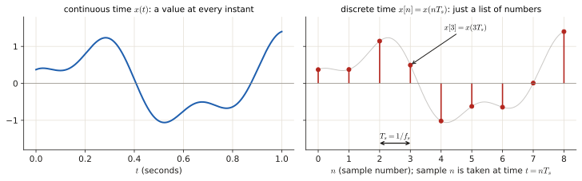
The exam's favourite corner
A discrete signal can only wiggle as fast as "up, down, up, down" (\(+1,-1,+1,-1,\dots\)). Anything faster is impossible to represent with one sample per step. That fastest wiggle corresponds to half the sample rate.
0.2 Sine, cosine, frequency#
Plain words. \(\sin\) and \(\cos\) describe smooth, repeating wiggles. They repeat every \(2\pi \approx 6.28\) units of their argument. A tone is one of these wiggles with an amplitude (how tall) and a frequency (how fast).
Continuous-time version:
| Symbol | Name | Unit | Meaning |
|---|---|---|---|
| \(A\) | amplitude | volts (whatever \(x\) measures) | how tall the wiggle is |
| \(f\) | frequency | Hz = cycles per second | how many full wiggles per second |
| \(\omega\) | angular frequency | rad/s | same thing as \(f\), in "radians per second": \(\omega = 2\pi f\) |
| \(T=1/f\) | period | s | time for one full wiggle |
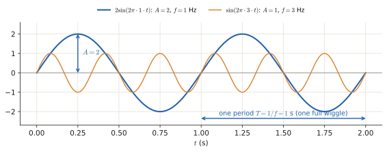
Why \(\omega = 2\pi f\)? One full cycle is \(2\pi\) radians. Doing \(f\) cycles per second means the angle \(2\pi f t\) grows by \(2\pi\) every \(1/f\) seconds. Both notations appear in exams (\(A\sin(\omega t)\) and \(A\sin(2\pi f t)\) are the same signal).
Discrete version. For \(x[n]\) the angle is \(\theta n\), with \(\theta\) measured in radians per sample:
and \(\theta\) always lives between \(-\pi\) and \(\pi\) (outside that range the same wiggle comes back — you cannot tell fast wiggles from slow ones once they are sampled).
Tiny worked example (this exact one is an exam question). \(f=25\) Hz sampled at \(f_s=50\) Hz:
So a 25 Hz tone sampled 50 times per second is the fastest possible wiggle: it lands exactly on \(\theta=\pi\), the top of the range. Nice to have in your head: \(f = f_s/2\) is the fastest digital wiggle (the Nyquist frequency).
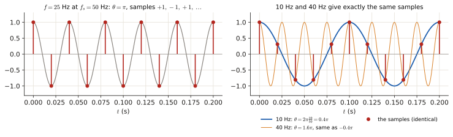
What the exam asks about this
- Convert between \(\omega\) and \(f\) (\(\omega = 2\pi f\)).
- Given \(f\) and \(f_s\), compute \(\theta = 2\pi f/f_s\).
- Recognise \(A\sin(\omega t)\) as periodic (this decides energy vs power, section 0.5 → page 3.1).
0.3 Complex numbers and \(e^{j\theta}\)#
Plain words. You do not need to like complex numbers. You only need one fact, and then one formula. The fact: the exam writes cosines as complex exponentials because it makes the algebra shorter. That is the entire reason. Nothing deeper.
The fact. \(j\) is the symbol for \(\sqrt{-1}\) (engineers write \(j\), mathematicians write \(i\); same thing). A complex number is a pair \((a,b)\) written \(a+jb\), and it can be drawn as an arrow in a plane: \(a\) to the right, \(b\) up.
| Notation | Read as | Value |
|---|---|---|
| \(z = a+jb\) | "z" | the number: right \(a\), up \(b\) |
| \(j\) | "j" | \(\sqrt{-1}\), so \(j^2=-1\) |
| \(z^*=a-jb\) | "z conjugate" | same number mirrored down |
| \(\lvert z\rvert=\sqrt{a^2+b^2}\) | "magnitude of z" | the length of the arrow |
| \(e^{j\theta}\) | "e to the j theta" | the arrow of length 1 at angle \(\theta\) |
The formula (Euler). The arrow of length 1 at angle \(\theta\) is exactly \(\cos\theta + j\sin\theta\):
From it, adding and subtracting the two mirror images kills the sine part:
and subtracting kills the cosine part: \(e^{j\theta}-e^{-j\theta}=2j\sin\theta\).
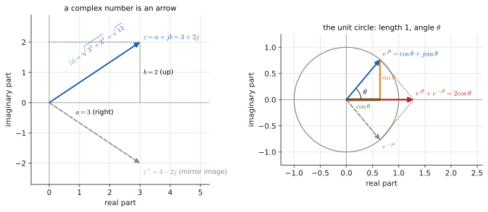
Why anyone bothers. \(\cos(\theta)\) is awkward to multiply and to raise to powers; \(e^{j\theta}\) is trivial (\(e^{j\theta}e^{j\phi}=e^{j(\theta+\phi)}\)). So the course rewrites every tone as two complex exponentials, does easy algebra, and converts back. You will see \(e^{-j k\theta}\) appear inside sums everywhere in Part 3 — it is just "a cosine in disguise".
Squared magnitude, the thing you actually compute. For any complex \(w\), \(\lvert w\rvert^2 = w\,w^*\). Example that appears on literally every spectral-estimation exam:
which is a real number (no \(j\) left), and that is why the answer always ends up as a formula in \(\cos\theta\). Full details in the Toolbox.
0.4 The three calculations you keep meeting#
Integrals and sums: "how much in total"#
- \(\displaystyle\int_a^b f(t)\,dt\) = the area under \(f(t)\) between \(a\) and \(b\). Used when time is continuous (\(x(t)\)).
- \(\displaystyle\sum_{n=0}^{N-1} f[n]\) = add up the values \(f[0]+f[1]+\dots+f[N-1]\). Used when time is discrete (\(x[n]\)).
They are the same idea ("total up a quantity over time"); one for smooth time, one for counted time. \(\sum\) goes with square brackets, \(\int\) goes with round brackets.
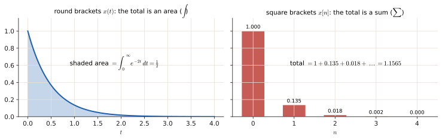
Worked example you will need on page 3.1:
Rules used (both in the Toolbox): \(\int e^{at}dt = e^{at}/a\), and \(e^{-\infty}=0\).
Limits: "what happens if you keep going forever"#
reads: "average over a window of length \(T\), then let that window grow without bound". It is a procedure, not a scary object: compute the average for a window of length \(T\), then see what value that average settles on as \(T\) gets huge.
The one limit fact you need: for any fixed number \(c\),
This single fact is why "finite energy ⟹ average power is zero" (page 3.1) and why "a cosine averaged over infinitely many periods gives exactly half its peak-square" (next).
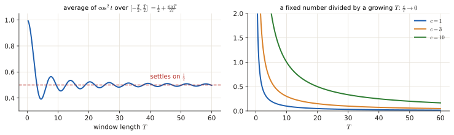
The geometric series: "add up a shrinking list"#
Where it comes from: the finite sum is \(1+r+\dots+r^N = \dfrac{1-r^{N+1}}{1-r}\) (multiply by \((1-r)\) and watch everything cancel). If \(\lvert r\rvert<1\) then \(r^{N+1}\to 0\), leaving \(\frac{1}{1-r}\).
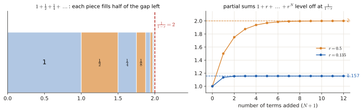
Worked example (an exam answer, exactly): \(E=\sum_{n=0}^\infty e^{-2n}\) is a geometric series with \(r=e^{-2}\approx0.135\):
Trig identities: the two that appear in every energy calculation#
Start from \(\cos(2\alpha) = 1-2\sin^2\alpha\) and rearrange:
Why these matter: energy and power formulas contain \(x(t)^2\), and squaring a sine gives you \(\sin^2\), which the identity splits into a constant (\(\tfrac12\)) plus a wiggle at double frequency (\(\cos 2\alpha\)). The constant is what survives averaging; the wiggle averages to zero. That is the whole trick behind "\(P = A^2/2\)".
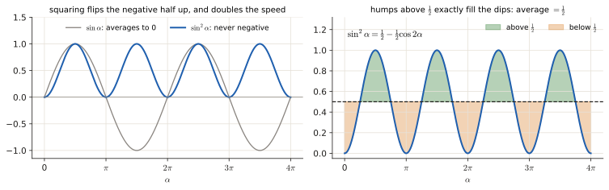
0.5 Spectrum: what a Fourier transform tells you#
Plain words. Any signal can be described as "a mixture of pure tones of different frequencies". The spectrum of a signal is the recipe: how much of each frequency is in there. A tone at 250 Hz and nothing else has a spectrum with a single bump at 250 Hz. Two tones = two bumps. Noise = a flat smear over all frequencies.
The Fourier transform is the machine that turns "signal vs time" into "recipe vs frequency". It is a change of description, nothing is lost or added — same signal, different label on the horizontal axis.
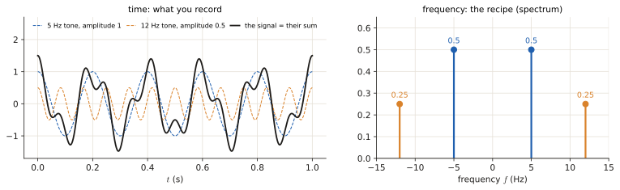
| Name | Symbol | Input | Output | Used for |
|---|---|---|---|---|
| FTD (Fourier transform for discrete-time signals) | \(X(e^{j\theta}) = \sum_n x[n]\,e^{-jn\theta}\) | the whole infinite list \(x[n]\) | a continuous curve in \(\theta\in[-\pi,\pi]\) | theory; what the true spectrum is |
| DFT (discrete Fourier transform) | \(X[k] = \sum_{n=0}^{N-1} x[n]\,e^{-j2\pi kn/N}\) | your \(N\) recorded samples | \(N\) numbers | what a computer can actually compute |
Three things worth memorising about this pair:
- The FTD is a curve, the DFT is a list of \(N\) numbers that samples that curve. The exam draws both in the same figure and asks you to match them (that is question 3a of January 2022).
- \(\theta\) is "frequency" in radians per sample, and \(\theta = 2\pi f/f_s\), so \(\theta=\pi\) ↔ \(f = f_s/2\) (the fastest wiggle, section 0.2).
- A pure, never-ending cosine of amplitude \(A\) has exactly two infinitely thin spikes in its spectrum, at \(\theta = \pm\theta_0\), each of height \(\propto A/2\). Two, because \(\cos\theta = \tfrac12(e^{j\theta}+e^{-j\theta})\): one spike for each of the two complex exponentials. This is why every spectrum picture of a cosine shows a peak on the left and one mirrored on the right.
DFT bins. The \(N\) DFT values sit at evenly spaced frequencies. The spacing is
Example: \(f_s = 50\) Hz and \(N = 24\) samples → \(\frac{50}{24}\approx 2.08\) Hz apart. The \(k\)-th number \(X[k]\) is "how much of the tone at frequency \(k\cdot 2.08\) Hz is present". Bin = one of those \(N\) frequency slots.
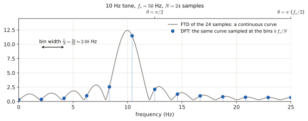
Decibels (dB). Spectra figures are drawn on a log scale: \(\lvert X\rvert_{\text{dB}} = 20\log_{10}\lvert X\rvert\). So 0 dB = height 1, −20 dB = height 0.1, −40 dB = height 0.01. When a figure says "the weak tone is 34 dB below the strong one", it means its amplitude is about \(10^{-34/20}\approx 0.02\) times the big one. dB exists purely so you can see tiny and huge things in the same plot.
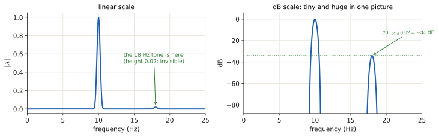
0.6 Probability from zero#
Parts 1, 2 and 4 live on this. Nothing here needs more than the integrals of 0.4.
Random variable and PDF#
Plain words. A random variable \(X\) is a number whose value you do not know until you look: the roll of a die, the voltage noise on a wire at 3:00:00 pm. You cannot predict the value, but you can say which values are likely.
For a number that can land anywhere on a line (a voltage), "the probability that \(X\) is exactly 0.5" is zero (there are infinitely many possible values). So instead we describe a random variable with a PDF (probability density function) \(p(x)\), a curve with one rule:
The area under the curve between \(a\) and \(b\) is the probability that \(X\) lands between \(a\) and \(b\). The total area under the whole curve is 1 (something must happen).
Two PDFs with real numbers
- Uniform on \([0,2]\): \(p(x)=\tfrac12\) for \(0\le x\le 2\), zero elsewhere. Total area \(=\tfrac12\cdot 2 = 1\) ✓. \(P(0.5\lt X<1.5)=\) width \(\times\) height \(=1\times\tfrac12=0.5\).
- Exponential: \(p(x)=e^{-x}\) for \(x\ge0\). Total area \(=\int_0^\infty e^{-x}dx = [-e^{-x}]_0^\infty = 0-(-1)=1\) ✓. \(P(X>1)=\int_1^\infty e^{-x}dx = e^{-1}\approx0.368\).
Careful: the height \(p(x)\) is not a probability (it can be bigger than 1, for example a uniform on \([0,0.1]\) has height 10). Only areas are probabilities.
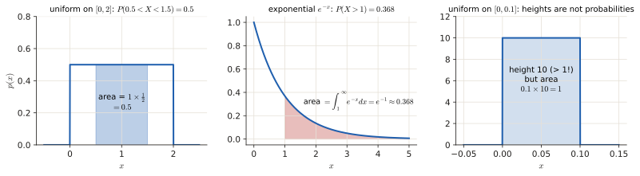
Expectation, variance#
Expectation (mean) \(\mathbb E[X]\) = the long-run average of \(X\) if you could repeat the experiment forever. Formula: weight every value by how likely it is and add up:
(For a die: \(\mathbb E[X]=\tfrac16(1+2+\dots+6)=3.5\). The uniform on \([0,2]\) has mean \(1\), the middle, as you would guess.)
Variance \(\sigma^2=\operatorname{Var}(X)=\mathbb E\big[(X-\mu)^2\big]\) (\(\mu=\mathbb E[X]\)): the average squared distance from the mean, i.e. how spread out \(X\) is. Standard deviation \(\sigma=\sqrt{\sigma^2}\) has the same units as \(X\).
Handy rewriting (expand the square: \(\mathbb E[X^2-2\mu X+\mu^2]=\mathbb E[X^2]-2\mu^2+\mu^2\)):
Die: \(\mathbb E[X^2]=\tfrac16(1+4+9+16+25+36)=\tfrac{91}{6}=15.17\), so \(\operatorname{Var}=15.17-3.5^2=15.17-12.25=2.92\).
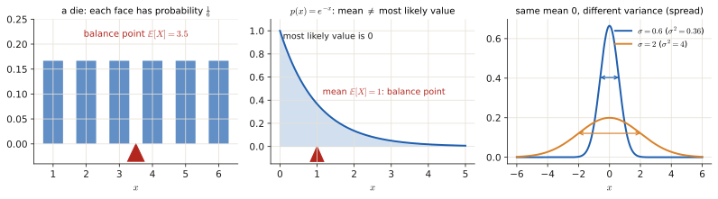
Three rules you will use constantly (the first one is just "averaging is linear"):
| Rule | Meaning |
|---|---|
| \(\mathbb E[aX+b]=a\mathbb E[X]+b\) | scaling and shifting move the mean the same way |
| \(\operatorname{Var}(aX+b)=a^2\operatorname{Var}(X)\) | shifting does not change spread; scaling by \(a\) scales spread by \(a\), variance by \(a^2\) |
| \(\operatorname{Var}(X+Y)=\operatorname{Var}(X)+\operatorname{Var}(Y)\) if \(X,Y\) independent | independent randomness adds up in variance |
Conditional probability and independence#
\(P(A\mid B)\) = "the probability of \(A\) given that we already know \(B\) happened". Restrict to the cases where \(B\) is true and ask how many of those also have \(A\):
\(A\) and \(B\) are independent when knowing \(B\) tells you nothing about \(A\): \(P(A\mid B)=P(A)\), equivalently \(P(A\cap B)=P(A)P(B)\). Two coin flips: \(P(\text{both heads})=\tfrac12\cdot\tfrac12=\tfrac14\). For random variables the same idea reads: \(X,Y\) are independent iff the joint PDF factorises, \(p(x,y)=p(x)\,p(y)\) (this is used again in 1.2 and in every estimation problem with "independent samples").
The Gaussian (bell curve)#
- \(\mu\) = centre of the bell (the mean), \(\sigma^2\) = variance (the width). The prefactor \(\frac1{\sqrt{2\pi\sigma^2}}\) only exists to make the total area equal 1.
- About 68 % of the area lies within \(\pm\sigma\) of \(\mu\), 95 % within \(\pm2\sigma\), 99.7 % within \(\pm3\sigma\).
- Standardising: if \(X\sim\mathcal N(\mu,\sigma^2)\) then \(\frac{X-\mu}{\sigma}\sim\mathcal N(0,1)\) (shift by the mean, divide by the spread). So any Gaussian question reduces to the standard one.
- \(Q\)-function: \(Q(x)=P(Z>x)\) for \(Z\sim\mathcal N(0,1)\) = the area of the right tail beyond \(x\). Symmetry gives \(Q(-x)=1-Q(x)\) and \(Q(0)=\tfrac12\). From the 68/95/99.7 numbers: \(Q(1)=\frac{1-0.683}{2}=0.1587\), \(Q(2)=\frac{1-0.954}{2}=0.023\). Exams that give you an erf table want exactly this: \(Q(x)=\tfrac12\big(1-\operatorname{erf}(x/\sqrt2)\big)\).
- Sums: independent Gaussians added together are Gaussian again, with the means added and the variances added.
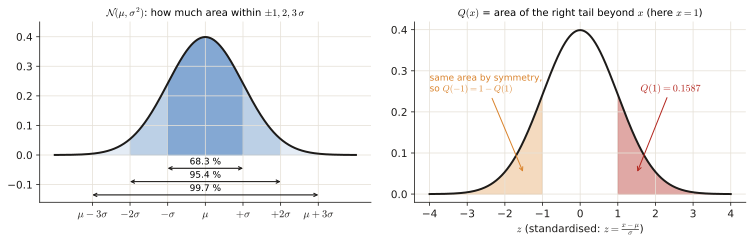
Likelihood: the same formula read backwards#
A PDF with a parameter, e.g. \(p(y;\theta)\), answers "given the parameter \(\theta\), how likely is each data value \(y\)?". Estimation reverses the question: the data \(y\) are fixed (you measured them), which \(\theta\) makes them most plausible? Same formula, now plotted against \(\theta\), and called the likelihood.
One sample, unknown mean
You measure \(y=3\) from \(\mathcal N(\theta,1)\) with \(\theta\) unknown: \(p(3;\theta)=\frac1{\sqrt{2\pi}}e^{-(3-\theta)^2/2}\). As a function of \(\theta\) this is a bell centred at \(\theta=3\): the most plausible mean is the measurement itself. That is the whole idea of maximum likelihood (2.1).
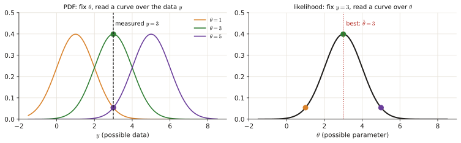
Random signals: stationarity and autocorrelation#
A random signal (random process) is a list of random variables \(x[0],x[1],x[2],\dots\): every time you record it you get a different list (a "realisation"). Two statistics describe it:
- Mean \(\mu_x=\mathbb E[x[n]]\).
- Autocorrelation \(r[l]=\mathbb E\big[x[n]\,x[n-l]\big]\): how strongly the signal at time \(n\) is related, on average, to the signal \(l\) steps earlier (\(l\) = the lag).
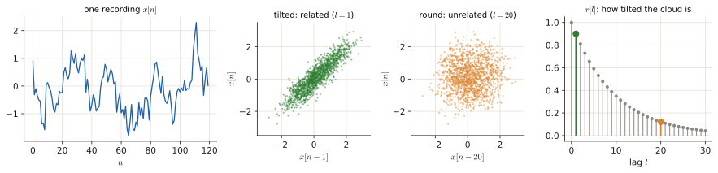
The process is stationary (wide-sense) when \(\mu_x\) and \(r[l]\) do not depend on \(n\): the statistics look the same at any time. Facts you will use:
- \(r[0]=\mathbb E[x[n]^2]\) = the average power (the random-signal twin of \(P_x\) in 3.1). It is the largest value: \(|r[l]|\le r[0]\).
- \(r[-l]=r[l]\) for real signals (symmetric in the lag).
- White noise has no relation between different times: \(r[0]=\sigma^2\) and \(r[l]=0\) for \(l\ne0\).
-
The PSD (power spectral density: how the power is spread over frequency) is the FTD of the autocorrelation:
\[P(\theta)=\sum_{l=-\infty}^{\infty} r[l]\,e^{-jl\theta}=r[0]+2\sum_{l=1}^{\infty} r[l]\cos(l\theta)\quad(\text{real, symmetric }r).\]Example: \(r[0]=1,\ r[\pm1]=0.5\), zero otherwise → \(P(\theta)=1+2(0.5)\cos\theta=1+\cos\theta\). Check: \(P(0)=2=1+0.5+0.5\) (the sum of all \(r[l]\)), and \(P\ge0\) everywhere, as a power must be (figure below).
-
Ergodic means one long recording is as good as many short ones: averaging over time in a single record gives the same answer as averaging over realisations. This is what lets us estimate \(r[l]\) from a single record (3.2).
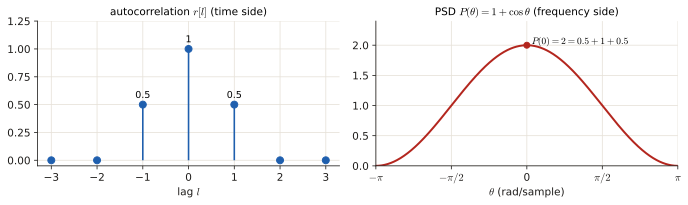
0.7 Word book (everything else the guide says without warning)#
| Word | What it means here |
|---|---|
| tone / component | one pure cosine (a single-frequency wiggle) inside a signal |
| periodic | repeats forever: \(x(t+T)=x(t)\) for some fixed \(T\) (sines, cosines, any repeating pattern) |
| stationary | "random, but its statistical properties (mean, power) do not change over time" — the random-signal version of "same forever" |
| lag \(l\) | how much you shift a signal before comparing it with itself (\(l\) samples back) |
| autocorrelation \(r[l]\) | "how similar is the signal to itself \(l\) steps later", on average. \(r[0]\) = average power |
| PSD (power spectral density) | the spectrum for random signals: how the power is spread over frequencies |
| convolution | "smear one thing with another". Multiplying signals in time = smearing (convolving) their spectra. You never compute one by hand in this course; you only use the consequence |
| main lobe | the big central bump of a window's spectrum (page 3.1) |
| side lobes | the smaller ripples left and right of the main lobe (page 3.1) |
| resolution | ability to see two nearby tones as two separate peaks |
| leakage | power of one tone showing up at wrong frequencies, hiding weaker tones |
| bias | an estimator is biased if it is wrong on average (systematically) |
| variance | how much an estimator jumps around between different datasets |
| MLE / MAP / MMSE | three recipes for guessing a number from data (Part 2) |
| hypothesis \(\mathcal H_0/\mathcal H_1\) | "\(\mathcal H_0\) = nothing is there", "\(\mathcal H_1\) = the signal/event is there" (Part 4) |
| \(P_{FA}\) / \(P_D\) | probability of false alarm / probability of detection (Part 4) |
Where to go next#
- Doing Part 3 (start with 3.1 Signals, windows, zero padding): sections 0.1, 0.2, 0.4, 0.5 of this page are everything you need.
- Doing Part 2 (estimation) or Part 4 (detection): section 0.6 (probability from zero), then 0.4 (derivatives + logs → Toolbox).
- Doing Part 1 (probability): section 0.6, then 1.1 Bayes.
- Doing 3.2 – 3.4: section 0.6 (autocorrelation, PSD) first.
- Any word you do not know: the word book 0.7.